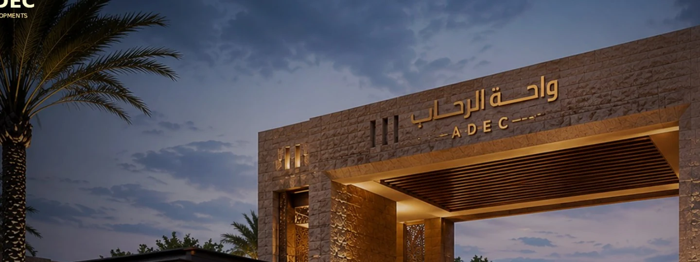
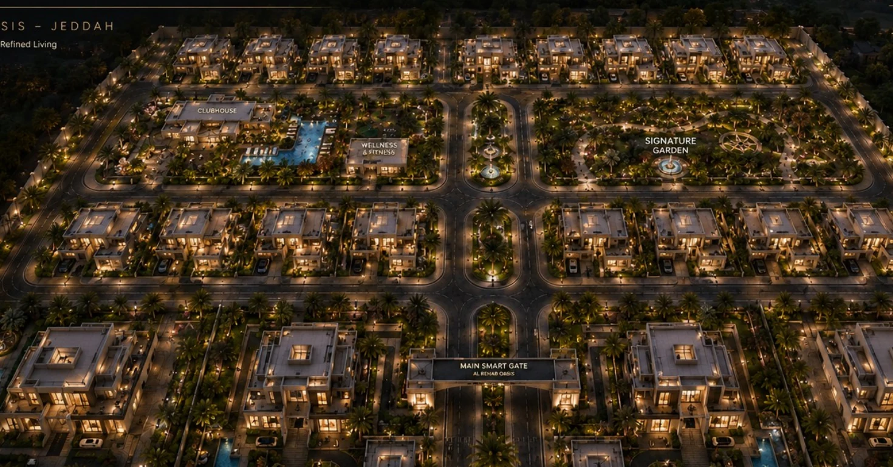
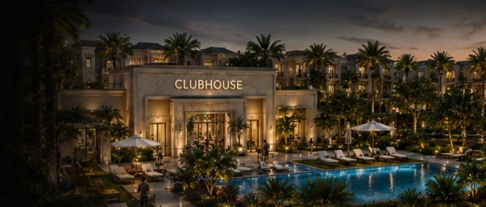
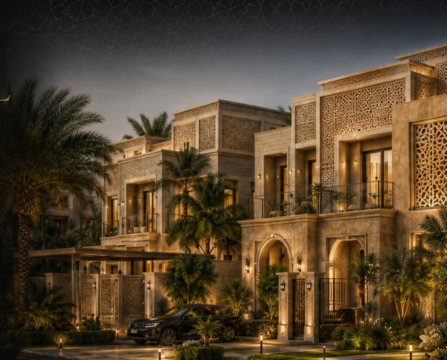

The page positions Palm Horizon around privacy, landscape, community and everyday family comfort while remaining transparent that the current visual gallery uses curated BADR residential references.
LocationJeddah, Saudi ArabiaPortfolio StatusPublished reference pageTypologyResidential / Compound

A CASE OF THINKING
READ THE PROJECT AS A SEQUENCE OF DEVELOPMENT DECISIONS.
The page now frames Palm Horizon through a stronger narrative lens while staying faithful to the published BADR record and using representative residential visuals from BADR projects.
THE DEVELOPMENT QUESTION
How can a residential compound create a calmer internal lifestyle and a clearer family-oriented identity?
THE GOVERNING IDEA
Landscape + community + everyday comfort.
THE DESIGN RESPONSE
Clustered homes, amenity-led open space, shaded movement and a coherent residential image.
THE SIGNATURE
A calm, community-led residential atmosphere.
WHY IT MATTERS
The project is read as a lifestyle proposition rather than a collection of isolated units.
Design Direction
A stronger compound identity built through curated BADR residential references.
Instead of keeping Palm Horizon visually empty, the page now uses selected BADR residential images to communicate mood, compound quality and everyday family lifestyle.
Project name, location and editorial reading remain tied to the supplied BADR portfolio record. The visual gallery is intentionally curated from BADR residential projects to enrich the presentation.



A New Development Opportunity
Your Site Deserves a Development Strategy Before It Becomes a Drawing Package.